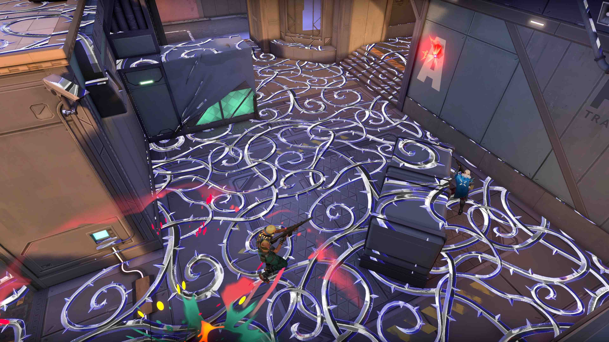

Новое обновление в игре Valorant
Valorant - описание патча 9.04

В наш отряд добавляется новый агент –
Vyse. Она страж с
уникальными навыками. После знакомства с ней кто-то может засомневаться,
стоит ли вообще ступать на точку. Лично я рекомендую отправиться на
Стрельбище и поработать над владением пистолетом, потому что против нее
вам придется частенько им пользоваться! Создайте уникальный стиль и
испытайте себя на международной соревновательной сцене. У вас есть по 13
раундов за атакующих и защитников. Используйте весь арсенал оружия и
тактических наработок. Один раунд – одна жизнь. Если хотите выжить,
думайте быстрее оппонента. Побеждайте противников в рейтинговых играх,
играх без ранга, в бою насмерть и в режиме "Быстрая установка Spike".
Каждая карта – площадка для демонстрации ваших нестандартных игровых
решений. Командные стратегии, яркие моменты и клатчи – вот для чего
созданы эти карты. Сделайте так, чтобы ваш стиль игры копировали многие
годы. Стальной сад выбирает сплетение из жидкого металла. Нажмите кнопку
ОГОНЬ, чтобы выпустить созданный вами металл в виде потока металлических
шипов, который после некоторой задержки ЗАКЛИНИВАЕТ основное оружие
противников.Итак, Акт 3 Эпизода 9 начинается. Давайте приступим. Ранее
заявленные изменения карты Sunset уже в игре. Также в игре доступна
новая карта Командного боя насмерть под названием Glitch. А вот какие
еще изменения есть в этом патче: проведена ротация набора карт,
"Приманка" Yoru теперь по-другому взаимодействует с некоторыми из умений
агентов, внесены изменения в умения Gekko
Кроме того, в режимах Без ранга и Быстрая игра на консолях теперь есть
карта Split.
А еще справились некоторые ошибки. Мы будем рады узнать, что вы думаете
об изменениях. До встречи на поле боя!С того времени, как в умения Gekko
было внесено усиление в патче 7.12, мы заметили, что его базовый паттерн
с применением и возвращением друзяшек, по сути, не имеет (или почти не
имеет) минусов.

Изменения агентов
Дуговая роза
В игру вступает Vyse! Vyse будет постепенно появляться в разных регионах
начиная
с 28 августа, 23:00 МСК.
Умения:Выбирает дуговую розу. Выберите целью поверхность и нажмите
кнопку
ОГОНЬ, чтобы разместить на ней скрытую дуговую розу. Нажмите кнопку АЛЬТ.
ОГОНЬ для размещения с обратной стороны поверхности. Используйте умение
повторно, чтобы ослепить всех игроков, обращенных к ней лицом. Розу
можно подобрать и разместить заново. Ее главная поражающая сила –
металлический сплав, содержащий радианит, который буквально течет по ее
венам. Из этого металла Vyse создает тщательно продуманное оружие,
позволяющее обхитрить противников. С помощью него она превращает
ключевые точки в ловушки, а неосторожных хищников – в добычу.
Замуровка
Выбирает струйки жидкого металла. Нажмите кнопку
ОГОНЬ, чтобы разместить скрытую стену-ловушку. Когда через нее переступает
противник, позади него из земли вырастает неразрушимая стена. Она
существует некоторое время, после чего распадается. Исправлена ошибка,
из-за которой "ЭПИ/центр" KAY/O разрушался "Замуровкой". Исправлена
ошибка, из-за которой на наклонных поверхностях столкновение с
"Замуровкой" занимало больше времени. Исправлена ошибка, из-за которой
"Замуровка" могла некорректно действовать, минуя зазоры. Исправлены
случаи некорректного воспроизведения реплики при разрушении "Замуровки".
Острая лоза
Выбирает клубок из жидкого металла. Нажмите кнопку
ОГОНЬ, чтобы выпустить его. Коснувшись земли, он становится невидимым. При
активации он распускается, становясь скопищем острых лоз, которые
замедляют всех игроков, передвигающихся в этой области, а также наносят
им урон. Что действительно уникально для Vyse как стража – так это ее
вспышка. Ни у одного другого стража в отряде нет вспышки вообще, и ни у
одного агента во всей игре нет такой вспышки, как у нее. Дуговая роза –
это устройство-вспышка, которое Vyse может разместить в выбранном месте
и привести в действие в нужный момент, а страж со вспышкой – это то,
чего мы с нетерпением ждали, ведь она может кардинально изменить подход
к формированию составов команд.